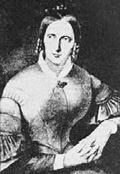

главная  персоналии
персоналии  Аннета фон Дросте-Гюльсгоф
Аннета фон Дросте-Гюльсгоф
главная |

Личность в историикраткая энциклопедияПроект «Личность в истории» посвящен людям — современникам грандиозных исторических событий, носителям редких качеств или людям, взгляды которых опередили их время. |
|||||||||||||||||||||||
Коротко |
Статьи |
Персоналии |
Литература |
||||||||||||||||||||
Аннета фон Дросте-Гюльсгоф |
|||||||||||||||||||||||
|
«Сохранилось несколько портретов Аннеты Дросте-Гюльсгоф. Вежливые заезжие живописцы, стараясь смягчить неженственную резкость черт, выделяли взгляд — строгий, задумчивый, тронутый скрытой болью». М. Рудницкий, |
 Аннета фон Дросте-Гюльсгоф | ||||||||||||||||||||||
Биографическая справкаБаронесса Аннета фон Дросте-Гюльсгоф (Droste-Hülshoff) (1797–1848 гг.) — немецкая поэтесса. Принадлежала к старинному вестфальскому роду. Считается мастером пейзажной лирики. Автор сборников «Стихотворения» (1838), «Горы, леса и озера» (1841–42), «Степные картины» (1841–42), «Последние дары» (изд. 1860). Книгу «Духовный год» (изд. 1851) составили религиозные стихотворения поэтессы. Она также написала несколько романтических драм и поэм. Новеллы Дросте-Гюльсгоф
Цитаты«Не хочу быть известной сейчас, но хочу, чтобы через сто лет меня читали». (??з писем Аннеты фон Дросте-Гюльсгоф «Глубокое чувство, деликатность и оригинальность картин природы». (Фридрих Энгельс о стихах Аннеты фон Дросте-Гюльсгоф «Они набросились на меня скопом; все было объявлено чистейшей блажью, полной околесицей и ерундой; они не понимают, как такая разумная с виду особа могла написать такой вздор и так опозориться». (Аннета фон Дросте-Гюльсгоф о реакции родных на публикацию сборника ее стихов «В нежной и стройной поэтессе Аннет фон Дросте-Гюльсгофф отмечается биографом строгое, мужественное лицо, напоминающее Данте». (Отто Вейнингер. Последние слова; Пол и характер: Сборник, Список литературы
|
|||||||||||||||||||||||
|